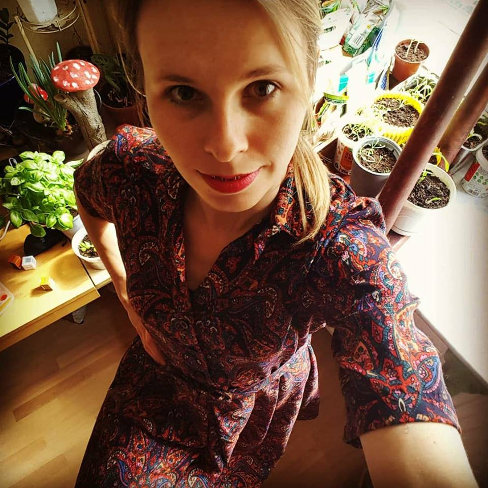

Aneta Włodarczyk
Python developer, Linux user,
psychotherapy student
location
Warsaw, Poland
email/hangouts
anetka.wlodarczyk@gmail.com
github, mostly abandoned projects
@nausicaaa
www
nausicaaa.github.io/
linkedin
Aneta Włodarczyk
Professional Programming Experience
Python Developer
,
Growbots
2016.05 - 2018.02
,
Poland, Warsaw
Python3.6
Python2.7
General:
Learning many technologies
Microservices
Working with many projects depending what was needed and often in different teams in sprints
Handling mail sending and mail received by clients through application.
Working with customer team helping them solving problems for particular clients
Kanban and scrum
Team work
Pair programming
Working and maintaining two versions of application and handling migration process to new app version
Working via MVP strategy
Working with data science team on classification service.
Duty
Working with APIs - Hubspot, a bit with Salesforce
Working with Gmail API, sending/fetching emails, push notifications
Databases:
Elastic search
Redis
Fetching data from mysql binlog
Db migrations, using Alembic
Mysql and postgres
SQLAlchemy
Big query
RethinkDB
Networking:
Http methods
Protokoły http ftp: https://www.quora.com/Why-do-HTTP-FTP-SMTP-and-POP3-run-on-top-of-TCP-and-not-UDP
udp/tcp ip
Testing:
Pytest
mock - a lot of mocking
Integration and unit testing
Scraping and crawling data:
Scraping service using scrapy, xpaths, rabbit, celery with redis db
Luminati
Splash
Devops and CI:
Git
Gitlab
Docker
Nomad
Google Cloud Service
Metrics - prometheus and graphite
Working with services via Consul
Other:
Rabbit
Celery - workers and queues, tasks
Swagger. Api entrypoints
Publisher and subscriber pattern in Python
Handling errorrs and exceptions, using Sentry
Flask
Asynchronicity in Python - Tornado
IMAP/SMTP protocol client (IMAP4 and smtplib)
Tools:
Pycharm, vim, sed, regex, postman, curl
Frontend:
Html, css, xpath
Self - learnt:
Django and Django DRF - check projects on github, have in mind that they are abandoned, done just for learning purpose.
Vagrant, virtual machine on Linux
Dorzuć how many times do githuba, ze sie uczylam DRFA
Other
Job
2013 - 2016
Self-employed as animal physiotherapist, working in veterinary clinics with dogs, cats and egzotic animals
Job
2011 - 2103
Working as clinical analyst and medical writer in Cracow, Warsaw and remotely
Education
2004 - 2010
Master degree in biology at Jagiellonian University, Cracow
English
Very good
Tools
I like to learn tools in-depth (PyCharm, vim, sed/awk, linux)
More about me
Psychotherapy - learning to become psychoterapist in the future, pursuing my dream
Dogs and my own dog with problems but the best in the world
Kettlebell training - if you don't know what kettlebell is, I can help ;)
Dumpster scavenging. Suprised? Check my instagram:
co_dzis_w_smietniku